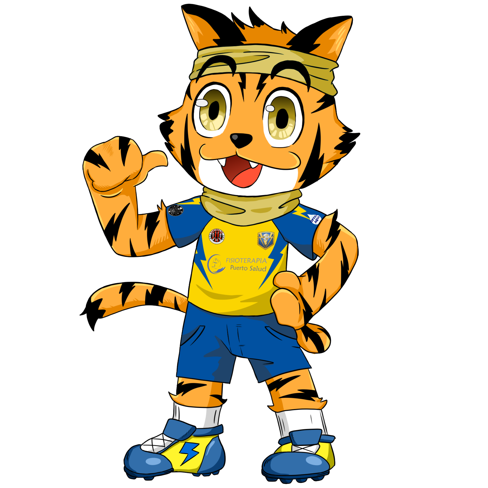
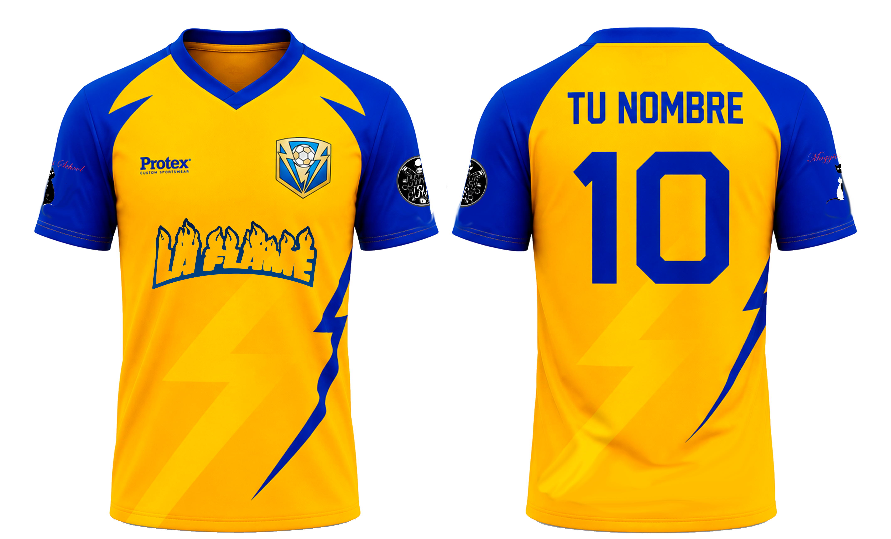
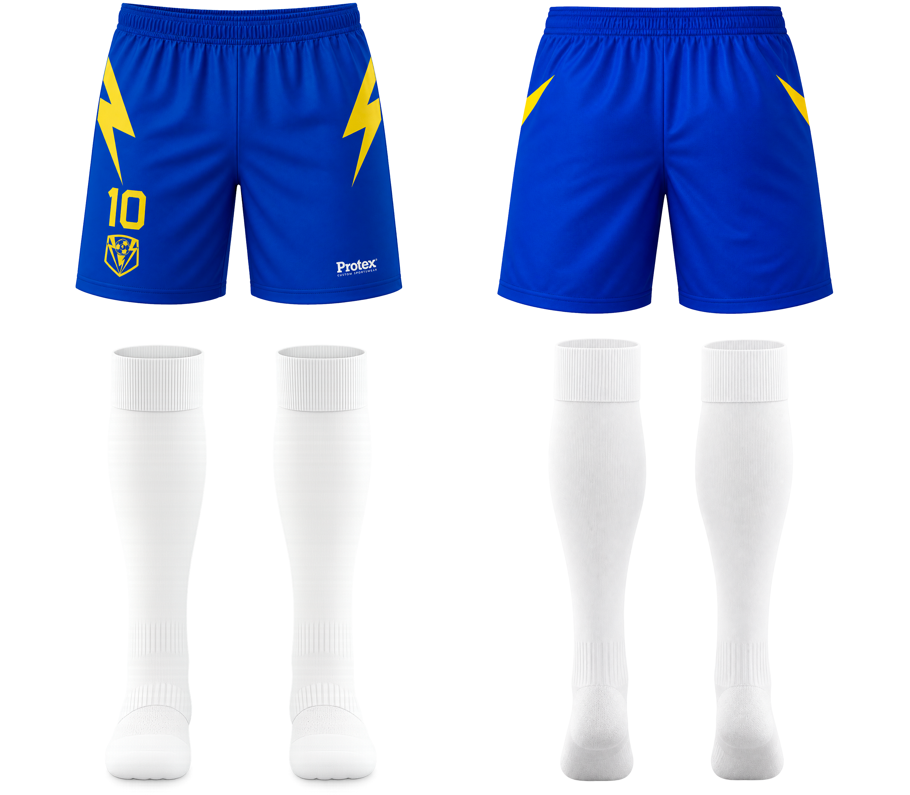

Elige la que más te encaje y centralizaremos tu inscripción.
Catalunya
Expande el proyecto con hambre competitiva en tu zona.
Elige entre Tarragona, Reus o Barcelona y deja tu perfil para que podamos avisarte en cuanto se abran las pruebas de tu zona.

Queremos atraer perfiles con ambicion y ganas de competir.
La imagen del club y su movimiento en redes acompanan el crecimiento.
Por qué unirte
Una oportunidad para entrar pronto en una expansion con caracter competitivo y marca propia.
Hambre competitiva desde el inicio
No buscamos solo llenar un formulario: buscamos perfiles que quieran pelear por formar parte de algo con ambicion.
Tu zona, tu puerta de entrada
Centralizamos el interes por Tarragona, Reus y Barcelona para activar la mejor zona en cuanto se confirmen las pruebas.
Club reconocible y potente en redes
La presencia digital y la identidad visual del club ayudan a construir sensacion de pertenencia desde el principio.
Entrada sencilla, filtro util
Te pedimos solo la información necesaria para poder valorar tu encaje y avisarte cuando toque moverse.


Formulario
Deja tu perfil para la zona de Tarragona.
Cuando se publiquen las pruebas de tu zona, te contactaremos por email y lo moveremos también por redes.
Como son las pruebas
Primero detectamos interes real, despues activamos la zona con mejor base competitiva.
Eliges tu zona
Centralizamos la demanda en Tarragona, Reus o Barcelona para no dispersar el arranque del proyecto.
Revisamos perfiles
Valoramos posicion, experiencia y encaje para dibujar un grupo competitivo desde el principio.
Anunciamos la convocatoria
Cuando la zona se active, te avisaremos por email y lo reforzaremos a traves de las redes sociales del club.
Calendario
El proceso en Catalunya esta abierto y la siguiente fecha se comunicara proximamente.
Inscripcion abierta
Ya puedes dejar tu perfil en Tarragona, Reus o Barcelona.
- Revision de perfiles por zona
- Definicion de convocatoria
- Pruebas presenciales proximamente
- Aviso por email
- Refuerzo en Instagram, TikTok y YouTube
- Actualizacion en la web principal
FAQ
Lo esencial sobre la expansión en Catalunya.
¿Hay pruebas ya cerradas para Catalunya?
No todavía. La fase actual es de captación y organización por zonas. Las fechas se anunciarán proximamente.
¿Por qué tengo que elegir zona?
Porque así centralizamos bien el interés y podemos activar Tarragona, Reus o Barcelona con mejor criterio y más claridad.
¿Qué pasa si mi zona se mueve mas tarde?
Tu perfil quedará guardado en la hoja de esa zona y te avisaremos en cuanto haya convocatoria o novedades relevantes.
¿Se busca un perfil competitivo?
Si. Queremos construir una base con ambicion, compromiso y ganas de entrar en un proyecto serio desde su expansion.
¿Se muestra precio?
No en esta fase. La idea es comunicar una propuesta competitiva cuando el proceso de zona esté más avanzado.
Contacto
Mantente atento a redes y correo para no perder tu convocatoria.
Contacto
risingraimon@gmail.comEs el canal que usaremos para confirmar novedades y siguientes pasos.